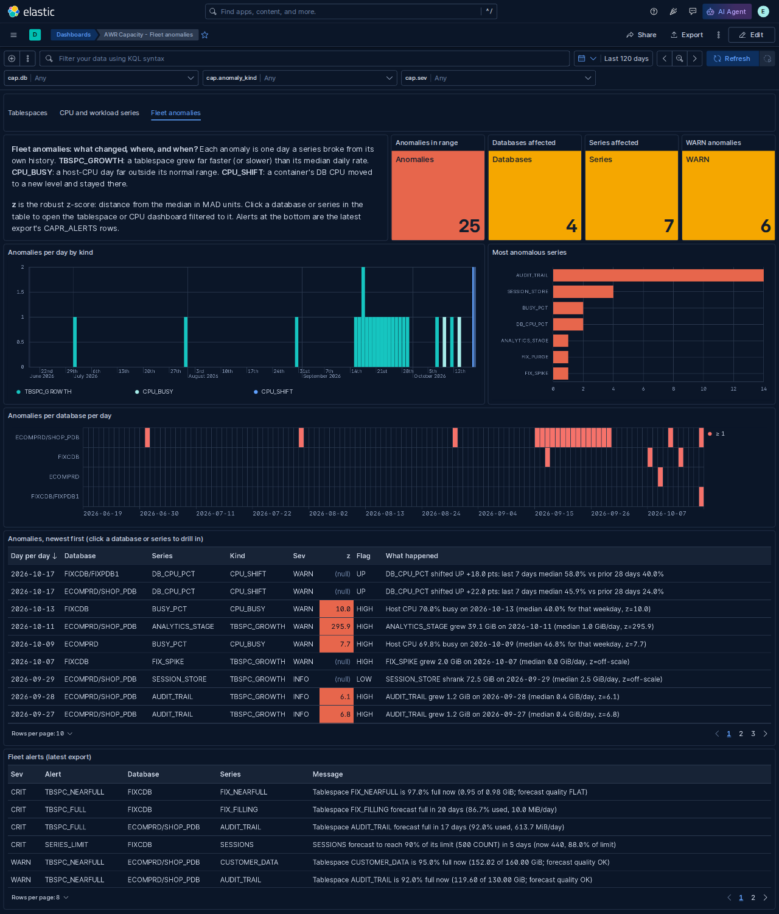
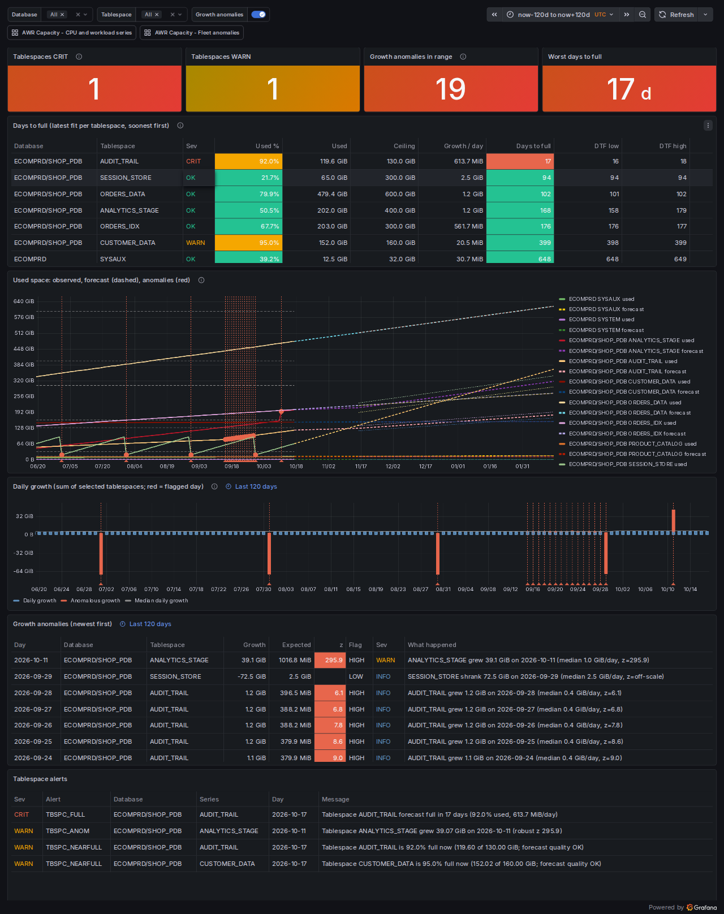
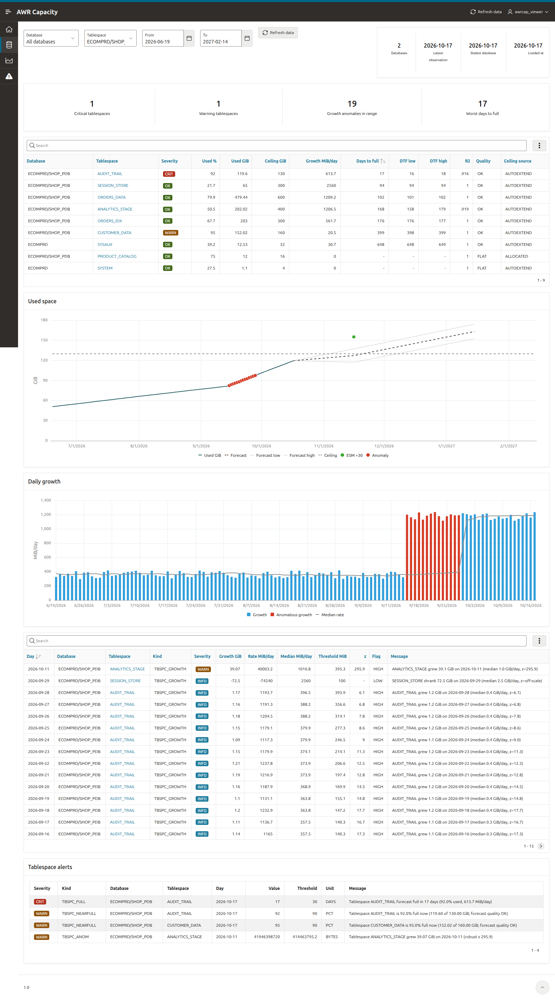
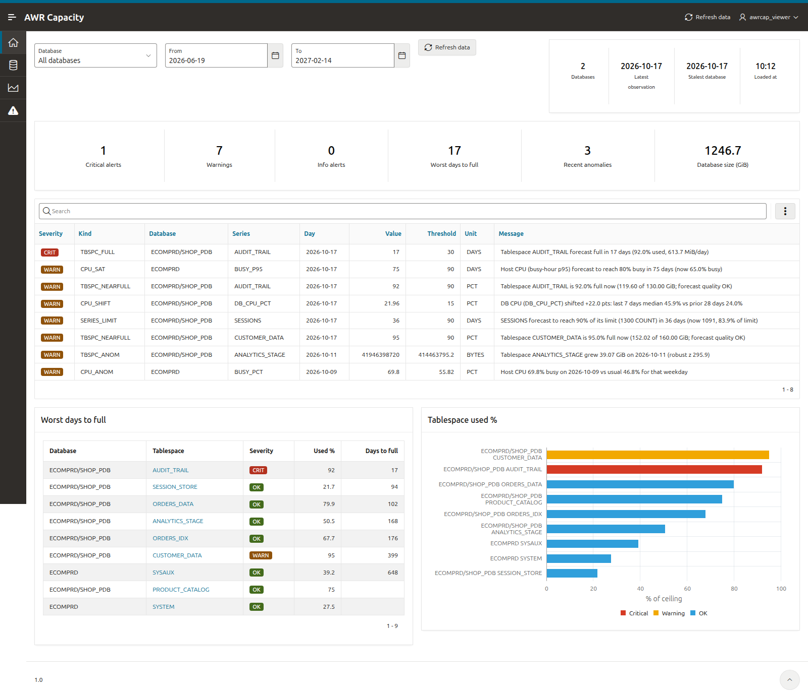

Usage
Generate the read-only report, read it, drill into anything that looks wrong, poll the alert view from your monitoring stack, and tune everything through config rather than SQL.
The report has eight sections. Read them top to bottom, drill into any row you don't believe, and wire CAPR_ALERTS into whatever already pages you. Nothing here writes to your AWR data.
Run the report
One script, run from the repo root. A bare run never prompts and spools a plain-text file.
sqlplus / as sysdba -- or any monitoring schema SQL> @report/report.sql -- everything from report/defaults.sql SQL> @report/report.sql 5 -- top_n=5, the rest defaulted SQL> @report/report.sql 5 7 N -- top_n / anomaly_days / show_esm SQL> @report/report.sql 10 30 AUTO 42424242 42424243 -- one container only SQL> @report/report.sql - - - - - SNAPSHOT -- from the last refresh run
Launch it from the repo root: SQL*Plus resolves @@ includes
relative to the outermost caller on 19c, so report/report.sql must
be started from the repository directory. It auto-loads
report/defaults.sql, so a bare run never prompts, and it spools to
reports/cap_report_<db>_<ts>.txt. The report is
read-only — it only SELECTs, and creates or modifies no database object.
Identity comes from SYS_CONTEXT, so no V$
or catalog privileges are needed.
| Position | Name | Default | Does |
|---|---|---|---|
| 1 | top_n | 10 | Rows in the days-to-full, near-full, forecast and ESM-compare rankings. |
| 2 | anomaly_days | 30 | Trailing days of anomalies printed in sections 3 and 5. Presentation only — CAPR_ALERTS has its own window, the anomaly_report_days knob (14). |
| 3 | show_esm | AUTO | AUTO = show section 6 only if OK models exist, else print a one-line hint; Y = always show it; N = skip it. Case-insensitive. |
| 4 | dbid | every | Show only this database in every section; top_n then ranks inside it. |
| 5 | con_dbid | every | Show only this container (pass - for the dbid to scope on the container alone). |
| 6 | source | LIVE | LIVE evaluates the views now. SNAPSHOT reads the alert list (CAPR_ALERTS_LATEST) and the section 1 and 7 fits (CAPR_FIT_HISTORY) of the newest OK refresh run of the results layer, which is fast; the header says which run. The other sections stay live. |
Presentation lives in one file — or on the command line. To change these
three for every run, edit report/defaults.sql, the single source of
truth both drivers load. To change one run, pass them positionally; an omitted argument falls
back to that file, and neither form ever prompts. Both scripts
UNDEFINE the arguments at the end, so a later argument-less call in the same
session can't silently inherit them. Everything else is analytics config —
see Configuration below.
CSV and cron
@report/report_csv.sql [dbid] [con_dbid] writes one CSV per CAPR
section view (alerts, days to full, forecast, anomalies, CPU trend and shifts, series, fit) into
reports/cap_csv_<db>_<ts>/: every column, every row in the
scope, a header line, every value quoted. For a scheduled run,
report/run_report.sh [connect] [--html] [--csv] [--scope D[:C]] [--snapshot]
[--keep N] [--container PDB] [--schema OWNER] runs the drivers from the repo root, prints
each file it wrote, and exits non-zero when a spool is missing or contains an
ORA- or SP2- line, so cron can alert on it.
30 6 * * * . ~/.bash_profile; /opt/awrcap/report/run_report.sh "/ as sysdba" --html --keep 14 >> /var/log/awrcap_report.log 2>&1
HTML report
A sibling driver renders the same sections as one self-contained HTML dashboard instead of plain text — open the spooled file directly in a browser.
sqlplus / as sysdba -- run from the repo root SQL> @report/report_html.sql -- spools reports/cap_report_<db>_<ts>.html SQL> @report/report_html.sql 25 60 Y -- same three positional arguments
report/report_html.sql shares the same defaults file, the same
knobs, and the same read-only guarantee as the text report — the HTML is assembled in one
PL/SQL block via DBMS_OUTPUT and captured by SPOOL.
It opens with a verdict strip (critical, warnings, forecast quality, host CPU p95, Tier 2 models,
the last refresh run and data coverage) and a ranked attention list built from CAPR_ALERTS: one row per
issue with the number that matters at the right, and one line naming everything that is healthy.
Then come the charts, all drawn with one grammar: area under history, the 95% prediction band as a
shaded wedge, a labelled ceiling or saturation line, a “today” divider, hollow rings on unusual days,
the ESM point with its interval (at the model's furthest step, labelled "ESM +N days"), and the date
printed where the projection crosses the ceiling. The whole-database hero reads the suite's own
DB_SIZE_GB fit, so it prints the same days figure as section 7.
Tablespaces that need a look get a card with days-to-full as the big figure; flat or far-from-full ones
collapse into a one-row sparkline strip. CPU shows the busy-hour p95 (what saturates) and each
container’s DB CPU as a share of the host’s logical CPUs, with any sustained level shift shaded. Unusual days
are dot strips per series with the numbers folded underneath, and Tier 2 vs Tier 1 is one row per
series with the backtest verdict. Each section renders inside its own exception block: a broken
view prints a red block for that section, the footer counts it, and the rest of the page survives. Every column header carries a plain-English tooltip, the
glossary sits in one “How to read this report” fold, and it all renders as plain
<svg> with no chart library and no external assets, plus a sticky section nav and
a light/dark toggle. See the sample report.
The two drivers read the same rows. Both consume the CAPR_ per-section views, where every derived number, label, severity marker and unit conversion is computed once; only chart geometry is calculated in the HTML driver. The text and HTML reports therefore cannot show different numbers.
Reading the report
Eight sections, top to bottom, each backed by one CAPR_ view.
| # | Section | What to read |
|---|---|---|
| 0 | At a glance CAPR_ALERTS |
CRIT / WARN / INFO counts, then one line per current issue: severity, kind, DB/PDB and a ready-to-page message. The same view the HTML banner and any external poller read, so they can never disagree. Its anomaly kinds use the anomaly_report_days knob, not this report's anomaly_days. The header above it prints the data-through date, the last refresh run and the coverage line (CAPR_COVERAGE); a DATA_STALE row comes first. With SNAPSHOT the list is the open, not acked states of the last refresh run. |
| 1 | Days-to-full & near-full CAPR_TBSPC_DAYS_TO_FULL |
1a ranks tablespaces by days_to_full at any fit quality — a LOW_CONFIDENCE estimate is still a signal, and the QUALITY column says how far to trust it. CRIT at/below dtf_crit days, WARN at/below dtf_warn; ACCEL > 1.5 means growth is accelerating. WORST/BEST bound the estimate with the 95% CI on the slope (empty BEST = might never fill). 1b re-ranks by PCT_USED alone, independent of fit quality, so a 97%-full tablespace whose fit is unusable can never vanish from the report. GATE says why a row inside the warning window does not page (low-q, cyclic, stale), so the SEV column matches what CAPR_ALERTS raises. NEED_90_GIB is the sizing ask: space to add so the upper 95% band stays under the ceiling for 90 days; ADD_BY is the worst-case fill date. A CYCLIC tablespace is ranked on its peak line. |
| 2 | Tablespace forecast CAPR_TBSPC_FORECAST |
Current / +30 / +90 / +180 GiB with TRAIN_N, R², quality, and the ESM column when Tier 2 models exist: ESM_GIB sits ESM_H days after the last day, the model's furthest step (at most 30) minus its age. 180_LO/180_HI are the 95% prediction band on the widest printed horizon. Bounded: a tablespace prints only if it is growing, near-full, or at least report_min_gb GiB used, then capped at top_n — the header states how many of the total it is showing. |
| 3 | Tablespace anomalies CAPR_TBSPC_ANOMALIES |
Flagged days inside anomaly_days, one line per (day, baseline mode), each fully justified: the day's growth rate (delta ÷ gap), the baseline median rate, the threshold max(k·MAD, 100 MiB/day floor), the robust z and N_HIST, the number of baseline days. MODE says which baseline flagged it: TRL (the last mad_window_days) or DOW (the same weekday over dow_weeks). A day can flag under one mode and not the other. GAP is days since the previous sample, greater than 1 across an AWR gap, which is why the rate and not the raw delta is scored. |
| 4 | CPU trend CAPR_CPU_TREND |
Six metrics per container: BUSY_PCT (daily average), BUSY_P95 and BUSY_PEAK (the busy hour — p95 of the day's intervals, and the peak_hour_from/peak_hour_to window), plus DB_CPU_SEC, DB_CPU_PCT and DB_CPU_P95 for this container's DB CPU as a share of the host's logical CPUs (NUM_CPUS, capped by cpu_count). DAYS_SAT projects when the metric reaches cpu_sat_pct (every metric except DB_CPU_SEC, which has no percentage ceiling), with the same WORST/BEST slope-CI range, starting from the smoothed anchor (the median of the last shift_days complete days). SIG = Y when the slope is outside its own 95% CI (the default quality gate), HOT = Y when the recent p95 median is already at or above cpu_sat_pct (a CPU_HOT / DBCPU_HOT alert), and GATE says why a row does not page. |
| 5 | CPU anomalies & level shifts CAPR_CPU_ANOMALIES · CAPR_CPU_SHIFTS |
5a lists flagged CPU points: host BUSY_PCT and each container's DB_CPU_PCT (METRIC), scored against three baselines (MODE): TRL (the last 28 days), DOW (the same weekday) and HOW (the same weekday and hour, so a day with a normal average but an inverted profile still shows). WHEN is the day, or the day, weekday and hour for an HOW row. Weekly seasonality is handled deterministically rather than modelled. 5b catches the other failure mode: a sustained step rather than a one-day outlier. The recent window's median is compared with the baseline median before it, and flags only when the gap exceeds shift_min_pct points and every day of the recent window sits above (UP) or below (DOWN) the baseline median ± its MAD-sigma — the N-of-M column shows that count. |
| 6 | ESM compare & backtest CAPR_ESM_COMPARE · CAPR_BACKTEST |
6a tablespaces and 6b CPU, Tier 2 beside Tier 1 at each horizon with the ESM CI; ESM_MODEL names the variant (HOLT or ADDW, i.e. EXSM_ADDWINTERS with a 7-day season). 6c is the holdout scorecard — see Backtest below. 6a shows exactly the same tablespaces as section 2 (four horizons each). With show_esm=AUTO and no models, the whole section collapses to a one-line hint. |
| 7 | Fixed-ceiling series CAPR_SERIES · CAPR_SERIES_ANOMALIES |
Four series that share one property — each has, or conspicuously lacks, a single hard ceiling. PROCESSES and SESSIONS are peak concurrency (the AWR high-water mark since instance startup, summed across RAC instances) against the matching init parameter. REDO_GB_DAY is redo written per day; it has no ceiling and is a trend for FRA / archive-destination sizing. DB_SIZE_GB is total permanent-tablespace bytes used against the summed tablespace ceilings. ASM_DG:+<group> is a diskgroup's GiB used against its total, and TEMP_PEAK:<ts> / UNDO_PEAK:<ts> the day's highest sampled TEMP / UNDO usage against its maxsize. FRA_DAYS on the REDO_GB_DAY row is db_recovery_file_dest_size over the current redo rate. DAYS_LIM projects when the series reaches series_sat_pct% of its limit — 90% by default, because hitting processes exactly is an outage, not a warning. 7b lists the flagged anomalies of these series (CAPR_SERIES_ANOMALIES), one line per (day, mode): PROCESSES, SESSIONS and REDO_GB_DAY on their level, DB_SIZE_GB on its daily growth in GiB. |
Read QUALITY before you read the number. Only OK is a trustworthy fit. LOW_CONFIDENCE means R² fell below r2_gate, FLAT means the slope is exactly zero, and INSUFFICIENT_HISTORY means fewer than min_train_days daily points — raise AWR retention, then wait. The report prints these loudly rather than quietly projecting a line it can't support.
Drill into one series
When a report row looks wrong, re-derive it with a pocket calculator.
SQL> @report/drill_tbspc.sql SYSAUX -- name REQUIRED SQL> @report/drill_tbspc.sql SYSAUX 2482321331 -- ... in one container only SQL> @report/drill_cpu.sql -- BUSY_PCT, all containers SQL> @report/drill_cpu.sql BUSY_P95 SQL> @report/drill_cpu.sql DB_CPU_PCT 2482321331
Each prints to screen and spools
reports/cap_drill_<name>_<ts>.txt containing four blocks:
the fit header (slope, intercept, R², the 95% slope CI, days-to-full or days-to-saturation
with its WORST/BEST range); the daily series over the train_days
window — actual, fitted icept + slope · day_n, residual, day-over-day delta, AWR gap
and that day's median / MAD-sigma / threshold / robust-z; a residual footer showing
SUM(residual) (zero by construction) and re-deriving
resid_se = sqrt(SSE/(n−2)) and the slope CI from scratch next to the values the view
publishes; and anomaly arithmetic, one spelled-out line per flagged (day, mode) with the
CAP_CONFIG knob values shown. The daily series shows the
TRAILING and the SAME_DOW baseline side by side, and the window starts at
train_start, so the footer reconciles with the view after a reset.
drill_tbspc.sql ends with who is filling it: the top 10 segments
by space allocated over the last seg_window_days (28), with each one's
share of the tablespace's growth, from CAPR_SEGMENT_GROWTH over
DBA_HIST_SEG_STAT. AWR keeps only the top segments of each snapshot,
so a small grower can be missing.
drill_cpu.sql's metric argument is optional and defaults to
BUSY_PCT; the valid values are the six in section 4. Anomalies are scored for
BUSY_PCT and DB_CPU_PCT only, so the anomaly columns read
n/a for the other four. For those two metrics the script adds a block of flagged
HOUR_OF_WEEK hours: weekday and hour, baseline size, expected value, sigma and threshold.
drill_tbspc.sql requires a tablespace name — without one it prints
usage and stops. Both are read-only, never prompt, and
UNDEFINE their arguments at the end.
Polling CAPR_ALERTS
One row per current issue, shaped for an OEM metric extension, Zabbix, Nagios, or a scheduler job.
SQL> SELECT severity, kind, db_pdb, message 2 FROM capr_alerts ORDER BY sev_rank; -- alarm on the numbers, without parsing the message text SQL> SELECT kind, db_pdb, series_key, value, threshold, unit 2 FROM capr_alerts WHERE severity = 'CRIT';
Every row carries severity (CRIT/WARN/INFO) with a numeric
sev_rank (1/2/3) to sort by, the
kind, the (dbid, con_dbid) keys plus a
resolved db_pdb label, the series_key
(tablespace name, CPU metric or series name), the observation
day_dt, the value that crossed its
threshold with a unit, a
ready-to-page message, the
baseline_mode that raised an anomaly kind (NULL for every other
kind) and an alert_key
(dbid|con_dbid|kind|series_key|YYYY-MM-DD|mode) that is unique, so a poller can
de-duplicate on it. Since M19 each row also carries a state_key
(kind|dbid|con_dbid|series_key|mode, the same from one day to the next, which the
results layer tracks), direction (LE for days-to-limit kinds,
GE for percent and age kinds, ABS for anomalies and shifts),
alarm_threshold (the WARN line, whatever the severity) and
is_current; an anomaly episode adds first_day,
n_days and max_z. Alarm on value vs
threshold; the message is for the human who gets paged. Forecast kinds fire only for
a current series (is_current = 'Y'), and their severity comes from
CAPR_SEVERITY, which honours a tablespace's own thresholds in
CAP_TBSPC_OVERRIDE.
| Kind | Severity | Raised when |
|---|---|---|
| TBSPC_FULL | CRIT ≤ dtf_crit, else WARN | CAPF_TBSPC_FORECAST: quality is OK and days_to_full ≤ dtf_warn. A confident forecast inside the warning window. |
| TBSPC_NEARFULL | CRIT ≥ nearfull_crit_pct, else WARN | pct_used ≥ nearfull_warn_pct right now, regardless of fit quality — a nearly-full tablespace whose growth is too erratic to forecast must still surface. |
| CPU_SAT | CRIT ≤ dtf_crit, else WARN | CAPF_CPU_TREND on BUSY_P95 — or BUSY_PCT when cpu_sat_on_p95 is 0: quality OK and days_to_sat ≤ dtf_warn. |
| DBCPU_SAT | CRIT ≤ dtf_crit, else WARN | The same rule on DB_CPU_PCT, per container — this container's DB CPU heading for the host's core capacity. |
| CPU_HOT | WARN (no CRIT line) | hot_now = 'Y' on BUSY_P95: the median of the recent daily p95 is already at or above cpu_sat_pct, at any fit quality. A saturated host needs no days-to-saturation. |
| DBCPU_HOT | as CPU_HOT | The same rule on DB_CPU_P95, per container. |
| TBSPC_ANOM | WARN on HIGH, INFO on LOW | A tablespace growth rate flagged inside the last anomaly_report_days under a mode enabled in alert_modes_tbspc (default 1 = TRAILING). One row per (tablespace, day, mode); value is the rate in bytes/day and threshold the bound it crossed. A shrink is informational, not a page. |
| CPU_ANOM | WARN on HIGH, INFO on LOW | Host busy% (BUSY_PCT), same window and severity mapping, modes from alert_modes_cpu (default 2 = SAME_DOW). An HOUR_OF_WEEK day raises one row carrying its worst hour and says how many hours flagged. |
| DBCPU_ANOM | WARN on HIGH, INFO on LOW | The same rule on DB_CPU_PCT, per container, with the same alert_modes_cpu bitmask. |
| CPU_SHIFT | WARN on UP, INFO on DOWN | CAPA_CPU_SHIFT: a confirmed sustained level shift. No day window applies — the view already holds only the current state of each series. |
| SERIES_LIMIT | CRIT ≤ dtf_crit, else WARN | CAPF_SERIES_FORECAST: quality OK and days_to_limit ≤ dtf_warn — a fixed-ceiling series heading for series_sat_pct% of its limit. |
| SERIES_NEARLIMIT | CRIT ≥ nearfull_crit_pct, else WARN | pct_of_limit ≥ nearfull_warn_pct now, at any fit quality — the near-full rule applied to processes, sessions and total DB size. |
| SERIES_ANOM | WARN on HIGH, INFO on LOW | An anomaly on PROCESSES, SESSIONS, REDO_GB_DAY (level) or DB_SIZE_GB (daily growth), modes from alert_modes_series (default 1 = TRAILING). |
| DATA_STALE | WARN | The dead-man check: a dbid's newest AWR snapshot ended at least stale_hours (36) ago, so every other number for it is frozen. A dbid older than data_stale_max_days (14) counts as retired and is listed in CAPR_COVERAGE instead. |
| MODEL_HEALTH | WARN failed, INFO stale | A Tier 2 model failed its last build, or is older than esm_max_age_days, per CAPF_ESM_HEALTH_SUMMARY. |
The alert window is not the report window. The anomaly kinds use anomaly_report_days (14) from CAP_CONFIG; sections 3 and 5 of the report use the anomaly_days presentation knob (30). They are deliberately different: one bounds what pages you, the other bounds what you read.
Every mode is scored; the bitmask decides what pages.
CAPR_ANOMALIES lists every flagged (point, mode) with
alerting = Y or N, and the anomaly rows of
CAPR_ALERTS are its alerting = 'Y' rows. To page on the
hour-of-week baseline as well as the same-weekday one, add the bits:
UPDATE cap_config SET cfg_value = 6 WHERE cfg_name = 'alert_modes_cpu';
(2 = SAME_DOW + 4 = HOUR_OF_WEEK). 0 turns a family's anomaly alerts off without
hiding the anomalies.
One row per episode, quieter during a shift. Consecutive flagged days of one
series and mode arrive as one row: its message starts "N consecutive days, latest …, peak robust
z …" and first_day / n_days /
max_z carry the numbers. A per-day CPU anomaly inside an active
CPU_SHIFT window drops to INFO "(level shift active)": the shift row already says it.
Alert state, acknowledgement and the weekly digest
CAPR_ALERTS is evaluated live and remembers nothing. The results layer adds the memory: run history, one state per alert, an ack, and the change feed.
SQL> EXEC cap_results.refresh -- or enable CAP_REFRESH_JOB (daily 01:30) SQL> SELECT severity, kind, db_pdb, message, age_days, events_since 2 FROM capr_alerts_latest ORDER BY sev_rank; -- open, not acked, as of the last run -- acknowledge: hidden until the date (NULL = until it resolves) SQL> EXEC cap_results.ack('TBSPC_FULL|3141592653|3141592654|AUDIT_TRAIL|-', SYSDATE + 7, 'disk ordered, CHG0042') SQL> EXEC cap_results.unack('TBSPC_FULL|3141592653|3141592654|AUDIT_TRAIL|-') SQL> SELECT * FROM capr_alert_events WHERE run_id > :last_run_id; -- poll the changes SQL> SELECT * FROM capr_weekly_digest; -- this week vs last
cap_results.refresh records a run in CAP_RUN
(RUNNING, then OK, or FAILED with the error stack and re-raised so a scheduler run fails too),
copies CAPR_FIT into CAP_FIT_HIST, and merges
CAPR_ALERTS by state_key into
CAP_ALERT_STATE. Each change writes a
CAP_ALERT_EVENT: NEW, ESCALATED,
DEESCALATED, RESOLVED (after resolve_grace_runs,
2, runs without it) and REOPENED. It commits; call it with no pending work of your own.
ack takes a state_key or the last
alert_key the state carried; an escalation or a reopen clears the ack.
cap_results.purge(p_keep_days) (default 400) trims old runs, and
cap_results.reset forgets everything, acks included.
| View | Answers |
|---|---|
| CAPR_ALERTS_LATEST | What is open and not acked right now, how old it is and how many events it had since it opened. A table read, so it is fast; the SNAPSHOT report reads it. |
| CAPR_ALERT_EVENTS | Every state change, newest first, with the run's as_of_day and the previous severity. Poll it with run_id > :last. |
| CAPR_RUNS | Every refresh run, its duration and one-line summary; stale_run = 'Y' when the last OK run is older than refresh_stale_hours (36). |
| CAPR_WEEKLY_DIGEST | The latest run against the latest one at least digest_days (7) older, per series: days to full then and now, percent used, quality and severity then and now, a change verdict, and the alerts that opened, resolved or reopened in between. |
| CAPR_FORECAST_ACCURACY | What each stored fit projected (value_then + slope_then × elapsed_days) against what the series reads now. Filter on elapsed_days for a horizon. |
| CAPR_FIT_HISTORY | The stored fits of the OK runs, for trend-of-the-forecast questions ("how has days to full moved this month?"). |
| CAPR_COVERAGE | Live, per dbid: newest snapshot and its age, days of history, retired flag, and series by quality. Both reports print its one-line summary. |
Kibana dashboards (ELK)
If you already run an Elastic stack, elk/ ships the same analytics the reports print into one index and installs three Lens dashboards. It is entirely optional and lives outside install.sql.
The path is the one the rest of your Oracle telemetry already takes: a script on the database host writes NDJSON, Filebeat tails it, Logstash indexes it. Nothing on the database host talks to Elasticsearch, and nothing writes to Oracle.
| Record | One per | Drawn as |
|---|---|---|
| observation | container × series × day, with cap.anomaly = true on days the CAPA_ layer flagged | the observed line; flagged days as a red bar under it |
| forecast | container × series × method × horizon (REGR anchors, the ESM point at the model's furthest step) with its band | the line to the right of today, plus low/high |
| fit | container × series × export day: slope, R², quality, days to full/limit/saturation, severity | the days-to-full and trend tables, colour-coded |
| anomaly | flagged event: growth outlier, CPU or DB CPU outlier, series outlier (one per baseline mode), or a CPU level shift, with a one-line explanation | the fleet anomaly board and per-board anomaly tables |
| alert | CAPR_ALERTS row × export day | a compact alerts table on every board |
Three dashboards: Tablespaces (days to full, observed + forecast + band, daily growth, growth anomalies), CPU and workload series (host CPU against the saturation line, DB CPU level shifts, sessions / processes / DB size / redo against their limits) and Fleet anomalies, which shows only anomalies across every database, newest first, and drills into the other two.

# stack side, once (index template, data view, dashboards) $ elk/setup.sh $ cp elk/logstash/oracle_capacity.conf <logstash pipeline dir>/ # beside the Oracle pipeline # database host, as the Oracle owner, with Filebeat deployed $ cp elk/filebeat/awrcap.yml /u01/app/oracle/filebeat/inputs.d/ $ elk/export.sh --sid cdb1 # daily; validates against the mapping, appends NDJSON
Documents carry deterministic ids, so a re-export overwrites rather than duplicates. The index mapping is strict and the exporter checks every document against it before Filebeat sees it. Everything else, including how to add a field or regenerate a dashboard, is in elk/README.md.
Grafana dashboards (ORDS, no Elastic)
The second visual path keeps the data in Oracle. ORDS (Oracle REST Data Services) publishes seven read-only views as JSON and Grafana's Infinity data source reads them live, so every refresh is a query against the suite's own views and nothing is copied anywhere.
| Endpoint | Backing view | Serves |
|---|---|---|
| containers | CAPR_CONTAINER | the database variable |
| series | CAPR_SERIES_POINTS | observed daily points with the CAPA_ flag joined on (anomaly = 1) |
| forecast | CAPR_FORECAST_POINTS | REGR anchors and the ESM point (furthest step, at most +30), with bands, dated past today |
| fit | CAPR_FIT | the current fit per series: days to full / limit / saturation, R², quality, severity |
| anomalies | CAPR_ANOMALIES | one row per flagged event (point and baseline mode) with its one-line explanation |
| hourly | CAPR_HOURLY_POINTS | host busy% and DB CPU% per hour with the hour-of-week verdict (default: the last 14 days) |
| alerts | CAPR_ALERTS | the pollable alert feed |
The same views feed the ELK export, so both paths show the same numbers by construction. The three boards mirror the Kibana ones; anomalies are red annotation markers with the message on hover, red points on the observed line, and a shaded span for a DB CPU level shift.

# 1. ORDS against the database (lab recipe: grafana/ords/README.md) # 2. publish the module, as the schema owner (or a DBA with ORDS_ADMIN) SQL> @grafana/ords/awrcap_module.sql # 3. Grafana with the Infinity plugin, data source and dashboards provisioned $ docker compose -f grafana/docker-compose.yml up -d # http://<host>:3001
Live has a cost. Every refresh runs the forecast and anomaly views, which take seconds at fixture size, and a module serves one schema. Pick this path when you have Grafana and no Elastic; pick the ELK path when the fleet already lives there or you want a daily history of the fits. Contract, limits and security notes are in grafana/README.md.
Oracle APEX application (nothing outside the database)
The third visual path needs no Elastic stack, no Grafana and no REST module. An APEX application imported into a workspace on the suite's schema reads the same CAPR_ views with APEX's own Oracle JET charts and Interactive Reports. Every view is loaded once per session into an APEX collection, so the pages stay fast while the data stays live; a Refresh data button reloads it and a freshness badge shows the latest observed day per database.
| Page | Shows | Filters |
|---|---|---|
| Overview | alert counts by severity, the live alert list, worst days to full, total database size, data freshness | database |
| Tablespaces | days-to-full ranking; used space with the dashed REGR projection, its band, the ceiling and red anomaly days; daily growth; growth anomalies; tablespace alerts | database, tablespace, date range |
| CPU and workload | host busy % and p95 against the saturation line, DB CPU per container with level-shift windows, the fixed-ceiling series against their limits, fits, alerts | database, date range |
| Fleet anomalies | anomalies per day by kind, most anomalous series, the per-series timeline, the anomaly list with drill-downs, every alert | database, kind, severity, date range |

Prerequisites. APEX 26.2 or later with ORDS, the suite installed in a schema (any seam mode; the CAPR_ views come with install.sql), and a workspace whose parsing schema is that schema. Nothing else: no plug-ins, no static files, no grants beyond what the suite already has. The app signs users in with APEX accounts; the viewer account it creates has no App Builder or SQL Workshop access.
# 1. workspace on the suite's schema + ADMIN and viewer accounts (as SYSTEM, passwords prompted) SQL> @apex/workspace.sql AWRCAP AWRCAP # 2. the application, from the apex/ directory (workspace, parsing schema, app id) $ cd apex && sqlplus awrcap@//host:1521/pdb @install.sql AWRCAP AWRCAP 110 # 3. open http://<ords-host>/ords/r/awrcap/awrcap/overview and sign in as AWRCAP_VIEWER # 4. optional: run every region query inside a scripted APEX session (about 90 s) $ cd apex && sqlplus awrcap@//host:1521/pdb @test/apex_smoke.sql 110
The first page of a session loads the views it needs into APEX collections (about 15 s on the demo schema, most of it the anomalies view); every later page is a couple of seconds. Refresh data reloads them, and the Data badges show the latest observed day per database and the load time, so an empty alert list is never mistaken for missing data. Re-running install.sql replaces the application in place; it refuses an application id that belongs to another app.

Generated, like the other two. apex/build.py writes the export; edit the builder, never the SQL. APEX 26.2 or later is required (the export uses its import API); the region SQL keeps the suite's 19c floor. Limits and the lab shortcut are in apex/README.md.
Querying the CAPR_ views directly
If you want a dashboard rather than a spooled file, skip the drivers and select from the same views they format.
| View | One row per | Useful because |
|---|---|---|
| CAPR_ALERTS | current issue | Severity, kind, value vs threshold, message. This is what a poller reads. |
| CAPR_CONTAINER | (dbid, con_dbid) | Resolves the db_pdb display label once — root/non-CDB → database name, PDB → DB/PDB, unknown → the raw con_dbid. |
| CAPR_TBSPC_DAYS_TO_FULL | tablespace | Both rankings pre-computed as rank_dtf / rank_nearfull, with sev_dtf / sev_nearfull already resolved from config. |
| CAPR_TBSPC_FORECAST | tablespace | GiB conversions, bands, quality, limit_source, the ESM point join (esm_horizon_days / esm_age_days), and the is_reportable / rank_report bound. |
| CAPR_TBSPC_ANOMALIES · CAPR_CPU_ANOMALIES · CAPR_SERIES_ANOMALIES | flagged (point, baseline mode) | Unit conversions, baseline_mode / mode_rank and a days_ago column, so a trailing window is a plain WHERE. Filter on baseline_mode to get one verdict per point. |
| CAPR_ANOMALIES | flagged (point, baseline mode), plus level shifts | Every anomaly with its severity, message and alerting flag: the source of the anomaly rows in CAPR_ALERTS. |
| CAPR_CPU_TREND · CAPR_CPU_SHIFTS | (container, metric) | Trend with days-to-saturation and range; shifts with their N-of-M confirmation counts and rank_shift. |
| CAPR_SERIES | fixed-ceiling series | Processes / sessions / redo / DB size with limit, saturation point, percent-of-limit and rank_series. |
| CAPR_ESM_COMPARE · CAPR_BACKTEST | (series, horizon) · series | Tier 2 vs Tier 1 pivoted by engine, and the holdout scorecard with its verdict. |
Ranking views expose rank_* columns, so applying your own top-N is
a WHERE rank_x <= n rather than a re-sort; anomaly views expose
days_ago for the same reason. Everything below
CAPR_ is still there if you need the raw fit —
CAPF_TBSPC_FORECAST carries all four prediction bands
(proj_30_lo/hi through
proj_365_lo/hi), both slope estimators
and resid_se.
Reading limit_source, and overriding the limit
A days-to-full is only as honest as the limit it counts down to.
CAPF_TBSPC_FORECAST (and CAPR_TBSPC_FORECAST above it) publishes limit_source, which says where that ceiling came from:
| Value | Means |
|---|---|
| OVERRIDE | A CAP_TBSPC_OVERRIDE row set the ceiling by hand. This one you can trust, because you wrote it. |
| AUTOEXTEND | The summed datafile maxsize recorded in AWR. Trustworthy only if the storage underneath can actually deliver it. |
| ALLOCATED | No autoextend — the currently allocated size is the ceiling. |
AUTOEXTEND is a promise the storage may not keep. A 32 GiB
datafile maxsize on a 10 GiB filesystem or ASM diskgroup is not 32 GiB of headroom, and a
days-to-full computed against it is a comfortable lie. When you know the real ceiling, state
it.
CAP_TBSPC_OVERRIDE
Set the real ceiling, or silence the staging tablespace that is supposed to fill up.
MERGE so the statement is re-runnable.
-- the real ceiling is the 200 GiB diskgroup, not the 2 TB datafile maxsize MERGE INTO cap_tbspc_override t USING (SELECT 1234567890 AS dbid, 2345678901 AS con_dbid, 'APPDATA' AS tablespace_name, 200 * 1024 * 1024 * 1024 AS limit_bytes, 'N' AS exclude_flag, 'DG +DATA is 200G; maxsize is fiction' AS note FROM dual) s ON (t.dbid = s.dbid AND t.con_dbid = s.con_dbid AND t.tablespace_name = s.tablespace_name) WHEN MATCHED THEN UPDATE SET t.limit_bytes = s.limit_bytes, t.exclude_flag = s.exclude_flag, t.note = s.note WHEN NOT MATCHED THEN INSERT (dbid, con_dbid, tablespace_name, limit_bytes, exclude_flag, note) VALUES (s.dbid, s.con_dbid, s.tablespace_name, s.limit_bytes, s.exclude_flag, s.note); -- stop forecasting the nightly-truncated staging tablespace, in EVERY database MERGE INTO cap_tbspc_override t USING (SELECT 0 AS dbid, 0 AS con_dbid, 'STAGING' AS tablespace_name, CAST(NULL AS NUMBER) AS limit_bytes, 'Y' AS exclude_flag, 'reloaded nightly -- growth is meaningless' AS note FROM dual) s ON (t.dbid = s.dbid AND t.con_dbid = s.con_dbid AND t.tablespace_name = s.tablespace_name) WHEN MATCHED THEN UPDATE SET t.limit_bytes = s.limit_bytes, t.exclude_flag = s.exclude_flag, t.note = s.note WHEN NOT MATCHED THEN INSERT (dbid, con_dbid, tablespace_name, limit_bytes, exclude_flag, note) VALUES (s.dbid, s.con_dbid, s.tablespace_name, s.limit_bytes, s.exclude_flag, s.note); COMMIT;
| Column | Rule |
|---|---|
| tablespace_name | Matched exactly. No patterns, no wildcards. |
| dbid · con_dbid | 0 is a wildcard meaning "any". So (0, 0, 'STAGING') is a fleet-wide rule, (dbid, 0, 'STAGING') is per-database, and naming both is per-container. |
| most specific wins | When several rows match one tablespace, a real dbid beats the 0 wildcard first, then a real con_dbid does. |
| limit_bytes | The real ceiling in bytes. NULL keeps the computed limit — useful on a row that exists only to set exclude_flag. |
| exclude_flag | 'Y' drops the tablespace from CAPD_TBSPC_DAILY and therefore from forecasts, anomalies, alerts and both reports. Defaults to 'N'. |
| dtf_warn · dtf_crit | This tablespace's own days-to-full thresholds. NULL = the knob. Every alert and both reports read the effective value (eff_dtf_warn / eff_dtf_crit in CAPR_TBSPC_DAYS_TO_FULL), and CAPR_SEVERITY reports thr_source = 'OVERRIDE'. |
| nearfull_warn_pct · nearfull_crit_pct | This tablespace's own near-full thresholds, same rule. A row may carry only thresholds, with limit_bytes NULL and exclude_flag 'N'. |
| note | Free text, for whoever reads the table in six months. |
The override is applied once, in CAPD_TBSPC_DAILY, so every layer above it honours it automatically — no re-install, no view change. Your rows survive @install.sql and are removed only by @uninstall.sql.
Tier 2 (OML ESM)
Train one Oracle Machine Learning model per series for a seasonality-aware second opinion, then re-run the report to populate section 6.
SQL> EXEC cap_forecast_ml.train_all(20); -- top-20 tablespaces + CPU series + their backtest twins SQL> EXEC cap_forecast_ml.train_tablespace('ORDERS_DATA'); -- retrain one series SQL> @report/report.sql -- section 6 now shows ESM vs REGR SQL> EXEC cap_forecast_ml.drop_all; -- remove the models again
Training needs the CREATE MINING MODEL privilege (free in all
editions since Dec 2019). With esm_tbspc_model at its default of
AUTO, train_all trains both EXSM_HOLT and
EXSM_ADDWINTERS(7) as holdout twins per tablespace and keeps whichever scored the
lower backtest MAPE — set esm_select_by_backtest to 0 to skip those
two extra trainings and let AUTO fall back to Holt, or pin the type outright with 0 or 1.
train_all also refreshes the backtest twins of the series it trains
(p_backtest => FALSE skips them). Each build runs under a temporary name and replaces
the old model only when it succeeded; a failure keeps the previous model, records
FAILED with last_error in CAP_ML_MODEL, and the
procedure raises ORA-20060 after the batch. CAPF_ESM_HEALTH lists every
model, the report headers print "N ok, F failed, S stale", and MODEL_HEALTH alerts on it.
To automate the refresh daily, see Scheduler jobs below.
Tier 2 never reaches past +30 days. Oracle 19c hard-caps EXSM_PREDICTION_STEP at 30 at any series length, and the package also caps it at a quarter of the series length (90 days of history give a 22-step model). CAPF_COMPARE shows the model's furthest step in the +30 row while the model is at most esm_max_age_days (7) older than its series' last day; section 6 prints the step when it is not +30, and the model age. The +90 / +180 / +365 columns are always REGR-only.
Reading the backtest
Which engine was actually right, over a window where you already know the answer.
Section 6c replays the recent past: each engine forecasts the last
backtest_holdout_days (28) from data before the cutoff,
and is scored against what really happened. MAPE% is the mean absolute percentage
error — lower is better. BIAS% is signed: positive means the engine
over-forecast. BETTER names the engine with the lower MAPE, and is empty when one
of the two has no score to compare. CUTOFF is the day the holdout starts.
ESM_PICK explains the AUTO decision in one column: either
ADDW H=2.90 W=1.20 — the chosen type followed by the Holt and AddWinters MAPEs
that decided it — or HOLT (config) when the type was pinned by
esm_tbspc_model instead of measured.
REGR is scored with or without models; ESM needs the twins. The
REGR_MAPE / REGR_BIAS columns work on a fresh install —
CAPF_BACKTEST is queryable any time. The ESM columns fill only
after cap_forecast_ml.train_backtest. Expect ESM to cover
fewer days than REGR: the backtest twins inherit both the 19c 30-step cap and the
package's FLOOR(rows/4) floor, and n_days reports the
coverage each engine actually achieved.
Configuration
Every threshold lives in CAP_CONFIG, read by the views through the one-row view CAP_CFG. Tuning never means editing SQL, and never means re-installing.
SQL> UPDATE cap_config SET cfg_value = 0.70 WHERE cfg_name = 'r2_gate'; SQL> COMMIT; SQL> SELECT * FROM cap_config ORDER BY cfg_name; -- the full annotated list
The next query against any CAPF_ / CAPA_ / CAPR_ view picks the new value up — they read the table, they don't embed it. The most commonly turned knobs:
| Knob | Default | Controls |
|---|---|---|
| train_days | 90 | primary fit window |
| recent_days | 28 | "recent" fit window (for accel_ratio) |
| min_train_days | 14 | below this → INSUFFICIENT_HISTORY |
| r2_gate | 0.60 | below this → LOW_CONFIDENCE |
| mad_k | 3 | MAD-sigma multiplier for the anomaly threshold |
| mad_window_days | 28 | the TRAILING anomaly baseline window |
| anomaly_report_days | 14 | the CAPR_ALERTS anomaly window (not the report's anomaly_days) |
| cpu_sat_pct | 80 | CPU saturation target for days-to-saturation |
| series_sat_pct | 90 | saturation point for the fixed-ceiling series in section 7 |
| abs_floor_bytes | 100 MiB | min growth/day to flag (flat-baseline guard) |
| dow_weeks | 8 | weeks the SAME_DOW and HOUR_OF_WEEK baselines look back |
| alert_modes_tbspc / _cpu / _series | 1 / 2 / 1 | which baseline modes page: 1 = TRAILING, 2 = SAME_DOW, 4 = HOUR_OF_WEEK, added together |
| dtf_warn / dtf_crit | 90 / 30 | days-to-full WARN / CRIT thresholds |
| nearfull_warn_pct / nearfull_crit_pct | 90 / 97 | near-full-now WARN / CRIT, at any fit quality |
| report_min_gb | 1 | how small a tablespace can be and still print in sections 2 and 6a |
Reference has the complete shipped set with the exact descriptions, and Advanced install lists the knobs the recent milestones added.
Switching to Theil–Sen or DRIFT
One knob swaps the slope estimator for every CAPF_ fit.
SQL> UPDATE cap_config SET cfg_value = 1 WHERE cfg_name = 'slope_method'; SQL> COMMIT; -- 0 = OLS (default), 1 = Theil-Sen, 2 = DRIFT -- ts_slope_bpd is computed only under 1; drift_slope_bpd always SQL> SELECT tablespace_name, slope_method, ols_slope_bpd, ts_slope_bpd 2 FROM capf_tbspc_forecast ORDER BY tablespace_name;
CAP_CONFIG is numeric, so the encoding is
0 = OLS (REGR_SLOPE, the default) and 1 = THEILSEN, the median of the
pairwise slopes. Theil–Sen is worth reaching for when a series carries a one-off step — a bulk
load, a migration — that drags a least-squares line off the underlying trend. The chosen
estimator drives the slope, intercept, projections, days-to-full, days-to-saturation,
accel_ratio and the FLAT test; the slope_method column on each row
says which one that row used, and both slopes stay visible as
ols_slope_bpd and ts_slope_bpd so you
can see what changed.
R² and the prediction bands stay OLS. There is no closed-form Theil–Sen interval in SQL, so r2, resid_se, the projection bands and the slope CI remain OLS residual quantities — drawn around whichever line you chose. That is a deliberate v1 trade-off, not an oversight.
A related knob for the other kind of step. Where Theil–Sen tolerates a
step, reset_on_shrink (on by default) removes one: after the most
recent large shrink in a tablespace, the training window restarts at that day — its
used_bytes is already post-purge — so the fit describes the series as it is now
rather than averaging across the cliff. shrink_mad_k (6) sets how
big a drop has to be to count; it is deliberately higher than
mad_k because it restarts a fit.
Scheduler jobs
Optional, and installed separately — see Advanced install for the setup and the directory-object requirement.
-- every job arrives DISABLED; enable whichever you want SQL> EXEC DBMS_SCHEDULER.ENABLE('CAP_REFRESH_JOB') -- daily 01:30, results layer SQL> EXEC DBMS_SCHEDULER.ENABLE('CAP_ML_RETRAIN') -- daily 02:00 SQL> EXEC DBMS_SCHEDULER.ENABLE('CAP_REPORT_SPOOL_JOB') -- daily 03:00 -- run one once, right now SQL> EXEC DBMS_SCHEDULER.RUN_JOB('CAP_REPORT_SPOOL_JOB') -- or write the snapshot by hand, no job needed SQL> EXEC cap_report_spool('CAP_REPORTS') -- check what happened SQL> SELECT job_name, status, error#, actual_start_date 2 FROM user_scheduler_job_run_details ORDER BY log_date DESC;
CAP_REFRESH_JOB runs cap_results.refresh
(see Alert state). CAP_ML_RETRAIN keeps the Tier 2
models tracking the latest AWR days; it runs daily because a model older than
esm_max_age_days drops out of the comparison. CAP_REPORT_SPOOL_JOB writes
<report_dir>/cap_alerts.txt — a header with the timestamp,
database and CRIT/WARN/INFO counts, then one pipe-delimited line per
CAPR_ALERTS row in the order
SEVERITY|KIND|DB_PDB|SERIES_KEY|DAY|VALUE|THRESHOLD|UNIT|MESSAGE, or a single
OK|NONE|…|No capacity alerts. line when there is nothing to report. The file name
is stable and overwritten on every run, so a poller can just read it.
The job writes alerts, not the report. SQL*Plus spooling cannot happen inside a scheduler job, so the formatted capacity report still comes from cron or your OS scheduler: report/run_report.sh (see CSV and cron). Use @uninstall_jobs.sql to remove the jobs and the procedure; it leaves the rest of the suite untouched.
For the non-obvious behaviours these knobs interact with — AWR retention, the flat-series
REGR_R2 quirk, block-size sourcing, the ESM cap — and the full index of every
object the suite creates, see the Reference page.